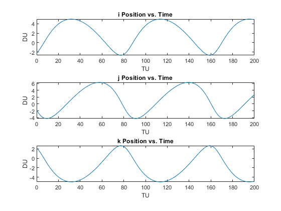
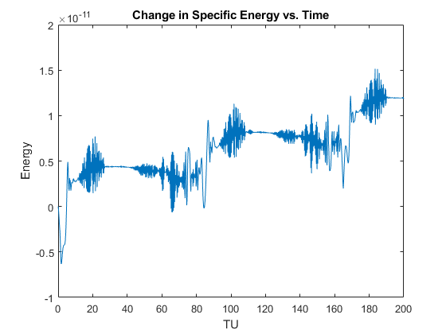
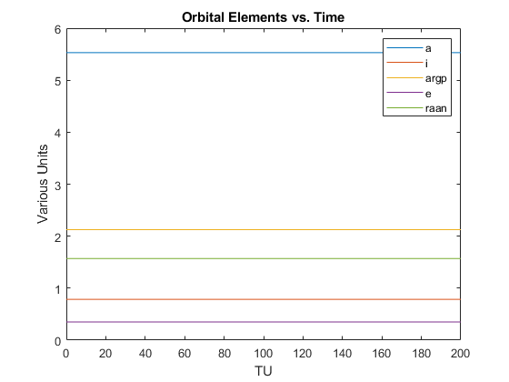

Contents
Problem 4
clear all
clc
r = [-2.2 -1.8 2.2];
v = [0.22 -0.528 -0.22];
mu = 1;
[a,emag,i,raan,argp,ta] = rv2oe(r,v,mu);
Problem 5
clear all
clc
r = [-2.2 -1.8 2.2];
v = [0.22 -0.528 -0.22];
time = 0:0.2:200;
odeoptions = odeset('RelTol', 1e-10,'AbsTol',1e-20);
y0 = [r v]';
[T,Y] = ode45(@twobodymu1,time,y0,odeoptions);
fig = 1;
figure(fig);
subplot(3,1,1)
plot(T,Y(:,1))
title('i Position vs. Time')
xlabel('TU')
ylabel('DU')
hold on
subplot(3,1,2)
plot(T,Y(:,2))
title('j Position vs. Time')
xlabel('TU')
ylabel('DU')
subplot(3,1,3)
plot(T,Y(:,3))
title('k Position vs. Time')
xlabel('TU')
ylabel('DU')

Problem 6
clear all
clc
r = [-2.2 -1.8 2.2];
v = [0.22 -0.528 -0.22];
mu = 1;
time = 0:0.2:200;
odeoptions = odeset('RelTol', 1e-10,'AbsTol',1e-20);
y0 = [r v]';
[T,Y] = ode45(@twobodymu1,time,y0,odeoptions);
rt = ((Y(:,1).^2)+(Y(:,2).^2)+(Y(:,3).^2)).^0.5;
vt = ((Y(:,4).^2)+(Y(:,5).^2)+(Y(:,6).^2)).^0.5;
e0 = (((norm(v))^2)/2)-(mu/norm(r));
et = ((vt.^2)./2) - (mu./rt);
deltae = et-e0;
fig = 2;
figure(fig);
plot(T,deltae)
title('Change in Specific Energy vs. Time')
xlabel('TU')
ylabel('Energy')

Problem 7
clear
clc
r = [-2.2 -1.8 2.2];
v = [0.22 -0.528 -0.22];
mu = 1;
time = 0:0.2:200;
odeoptions = odeset('RelTol', 1e-10,'AbsTol',1e-20);
y0 = [r v]';
[T,Y] = ode45(@twobodymu1,time,y0,odeoptions);
r = Y(:,1:3);
v = Y(:,4:6);
for j = 1:length(r)
[a(j),emag(j),i(j),raan(j),argp(j),ta(j)] = rv2oe(r(j,:),v(j,:),mu);
end
plot(T,a)
hold on
plot(T,i)
plot(T,argp)
plot(T, emag)
plot(T,raan)
title('Orbital Elements vs. Time')
xlabel('TU')
ylabel('Various Units')
legend({'a','i','argp','e','raan'},'Location','northeast')
